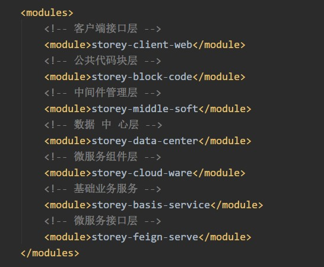

原文连接:https://www.cnblogs.com/cicada-smile/p/11817455.html
更新进度(共6节)： 源码地址：GitHub·点这里 || GitEE·点这里
| 章节 | 文章标题 |
|---|---|
| 01 | 项目技术选型简介，架构图解说明 |
| 02 | 业务架构设计，系统分层管理 |
| 03 | 数据库选型，业务数据设计规划 |
| 04 | 中间件集成，公共服务管理 |
| 05 | SpringCloud 基础组件应用设计 |
| 06 | 通过业务、应用、技术、存储方面，聊聊架构 |
一、架构的概念
架构分类可细化的分为业务架构、应用架构、技术选型、代码规划、部署环境架构等。业务架构是核心的驱动力，应用架构是实现的思路，技术选型落地是结果。根据用户需求，设计合理的业务架构，做出相应的应用架构流程，最后落地实施，完成项目。如何在架构的初期，预判业务发展的速度，保证架构可以稳定快速的扩展，支撑起业务发展，这个是软件开发者，特别是架构师，需要长期积累和修炼的核心能力。
二、业务架构
业务架构中包括业务规划、功能模块、流程设计，微服务架构模式中对整个系统的业务进行服务化拆分设计，把实际的业务抽象化,进而进行封装，优化服务结构。不需要最好的架构，只选则合适的架构，系统架构的原则都要以解决业务问题为核心目标，任何不基于业务做天马行空的架构都是对公司的不负责任。
三、应用架构
应用架构流程是基于业务架构来设计的，相辅相成的关系。每个应用可以作为独立的服务组件，把系统规划为一个个服务模块，进而进行开发，部署，运维等系列操作，所谓应用就是各个服务模块。首选要明确各个服务核心功能，其次确定各个服务间协调工作，保证服务的稳定性。微服务架构模式下，对系统进行水平拆分和垂直拆分，做到可以对任何高并发的服务模块进行独立扩展，灵活性非常好。
四、数据架构
数据架构是确定数据库模型的设计，不同业务场景下的数据可以选择不同种类的库来存储，例如搜索的数据可以使用ES，热点数据可以使用Redis，普通业务数据可以选择MySQL。
五、项目代码规划

1、分层结构设计
清晰的分层设计可以帮助快发人员快速的理解系统，缩短熟悉系统的时间。
2、模块依赖
给出模块依赖的明确顺序，比如接口(Web层)依赖服务层(Service层)，服务实现(Impl)依赖持久层接口(Dao)，持久层实现(DaoImpl)依赖表实体对象(Entity),避免系统陷入代码杂乱的坑中。
3、开发规范
每个项目开发必须要遵守统一的编码规范文档，统一命名格式，注释风格，这样可以方便其他人员快速阅读和理解代码逻辑。
六、技术选型落地
选择合适的基础框架，数据库，中间件，基于项目的开发规范，把应用架构完整的实现，这样项目就很难走偏。把握系统的高可用、高性能、扩展、伸缩、安全管理等方方面面的知识需要一个持久的积累和在实践中不断进步。
七、源代码地址
GitHub·地址
https://github.com/cicadasmile/husky-spring-cloud
GitEE·地址
https://gitee.com/cicadasmile/husky-spring-cloud：通过业务、应用、技术、存储方面，聊聊架构5.png)